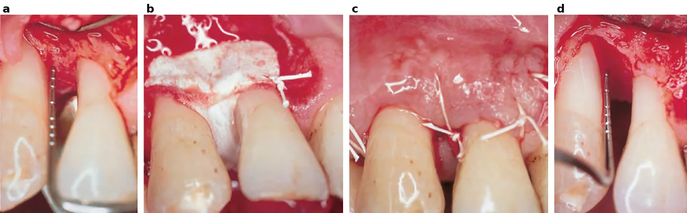
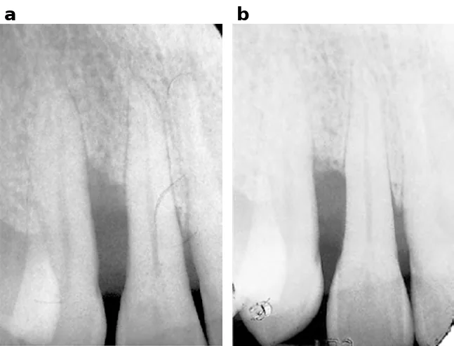

نسخه استخراجشده؛ ترجمه یا تأیید علمی انجام نشده است. وضعیت: captured
به یاد بیاور: پس از جراحی، چهار نوع سلول برای اشغال سطح ریشه رقابت میکنند — و تنها سلولهای لیگامان پریودنتال میتوانند چسبندگی جدید بسازند، اما کندتریناند.

🔑 ایده GTR در یک جمله: با قرار دادن یک ممبران، رقبای سریع — اپیتلیوم و بافت همبند لثه — را از فضای نقص مسدود کن، تا سلولهای کند PDL و استخوان فرصت رسیدن پیدا کنند.
| شرط | چرا | |
|---|---|---|
| ۱ | حذف اپیتلیوم (Exclusion) | مهمترین کارکرد ممبران |
| ۲ | حفظ فضا (Space maintenance) | اگر ممبران فرو بریزد، فضایی برای بازسازی نمیماند |
| ۳ | پایداری لخته (Clot stabilization) | لخته، داربست اولیه مهاجرت سلولی است |
| ۴ | بسته ماندن زخم (Primary closure) | برهنه شدن ممبران = آلودگی = شکست |
⚠️ هر چهار شرط لازماند؛ شکست هر یک، کل نتیجه را از بین میبرد.
| غیرقابل جذب | قابل جذب | |
|---|---|---|
| نمونهها | ePTFE، ePTFE تقویتشده با تیتانیوم | کلاژن، پلیلاکتیک اسید، پلیگلیکولیک اسید |
| حفظ فضا | 🟢 عالی — بهویژه نوع تقویتشده با تیتانیوم | 🔴 ضعیفتر — ممکن است فرو بریزد |
| جراحی دوم | 🔴 لازم است برای برداشتن | 🟢 لازم نیست |
| خطر برهنه شدن | 🔴 بیشتر و پیامد جدیتر | کمتر |
| سازگاری بافتی | خوب | 🟢 عالی؛ کلاژن هموستاز هم میدهد |
🔑 معامله اصلی: ممبران غیرقابل جذب فضا را بهتر نگه میدارد اما به جراحی دوم نیاز دارد و برهنه شدنش پرخطرتر است. ممبران قابل جذب راحتتر است اما ممکن است فضا را حفظ نکند — بهویژه در نقصهای بدون دیواره حمایتی.

📌 راهحل رایج امروزی: ترکیب ممبران قابل جذب با ماده پیوندی — ماده پیوندی نقش نگهدارنده فضا را ایفا میکند و ممبران فقط وظیفه مسدودسازی را بر عهده میگیرد. این ترکیب، ضعف اصلی ممبران قابل جذب را جبران میکند.
🔴 برهنه شدن ممبران، شایعترین عارضه و مهمترین علت شکست GTR است.
ممبران برهنه، بلافاصله با بیوفیلم کلونیزه میشود.
باکتریها به فضای نقص نفوذ میکنند و بازسازی را از بین میبرند.
در ممبران غیرقابل جذب، پیامد جدیتر است چون ماده باقی میماند و مخزن دائمی آلودگی میشود.
تکنیک حفظ پاپیلا برای پوشش کامل ناحیه بیندندانی.
فلپ بدون کشش — کشش، لبهها را از هم باز میکند.
ممبران نباید تا لبه فلپ امتداد یابد؛ باید کاملاً زیر بافت بماند.
بخیه دقیق و ترجیحاً تکرشتهای — بدون اثر فتیلهای.
کلرهگزیدین و پرهیز از مسواک زدن ناحیه.
| مطلوب | نامطلوب |
|---|---|
| 🟢 نقص سهدیواره عمیق و باریک | 🔴 نقص یکدیواره یا پهن |
| 🟢 فورکیشن درجه II فک پایین | 🔴 فورکیشن درجه III |
| 🟢 کنترل پلاک عالی | 🔴 کنترل پلاک ضعیف |
| 🟢 غیرسیگاری | 🔴 سیگاری |
| 🟢 بافت نرم ضخیم برای پوشش | 🔴 بافت نازک — خطر برهنه شدن |
🔑 بهترین اندیکاسیون فورکیشن برای GTR: درجه II در مولر فک پایین. فورکیشن درجه III (سرتاسری) نتیجه قابل پیشبینی نمیدهد چون فضای محصوری برای حفظ لخته وجود ندارد.
⚠️ اشتباه رایج ۱: کارکرد اصلی ممبران، مسدود کردن اپیتلیوم است.
⚠️ اشتباه رایج ۲:برهنه شدن ممبران، شایعترین علت شکست است.
⚠️ اشتباه رایج ۳: بهترین اندیکاسیون فورکیشن، درجه II فک پایین است — نه درجه III.